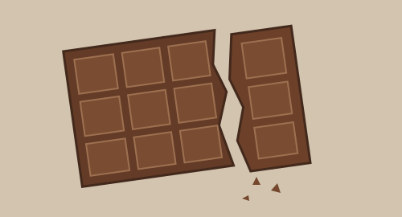

Sorting.
By hand, on a tray. Flat beans, broken beans and stones come out.

Cocoa is a fruit seed. It tastes of where it grew.
Our Madagascar is sharp with raspberry.
Our Peru is not.
We start with a sack of beans.
Not somebody else’s chocolate.
That makes all the difference.
Roasted, ground, tempered. Four days of patience for a very small sound.
Original drawn bar. The once-only split respects reduced motion.
Build a three-origin enquiry list. Not a cart. Availability is confirmed at the shop.
0 of 3 origins selected
Ask about a three-bar set ↗No origins match that note.
By hand, on a tray. Flat beans, broken beans and stones come out.
A roast developed for each origin, so the character of the bean can come through.
The shell separates from the nib. The nib is where the chocolate begins.
Granite wheels grind cocoa and sugar, slowly refining texture and flavour.
Heated, cooled and worked so the cocoa butter sets with a clean break.
Illustrative prices. Orders are arranged directly by email or in the shop. Ingredients and allergens need confirmation for each product.
Cocoa beans and cane sugar. Origin and roast bring the character.
Ask about whole milk powder and cocoa butter. Milk varieties contain milk; allergen cross-contact is possible.
Fictional recipe philosophy. Read a real product label and discuss allergies before purchasing.
Bristol BS6 5QA
Wednesday to Saturday
10:00 to 17:00
The brief describes a tasting on the first Saturday at 11:00. Confirm current arrangements directly.
Ask about visiting ↗UK posting season in this concept: October to April. No delivery promises or online checkout.